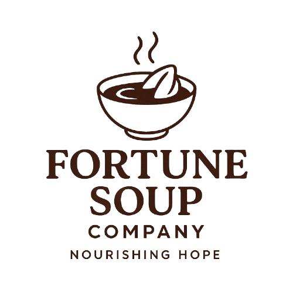
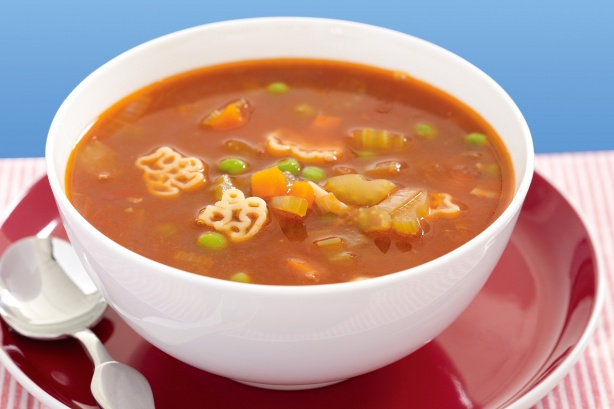

At fortune soup company we believe that a warm bowl of soup can do more than just fill stomach it can nourish a soul and spark change.


Our soups are made with wholesome ingredients
sourced from local farmers and generous donors,ensuring every serving
is both nourishing and comforting.
The bread-baked fresh each morning adds the familiar
,homely touch that makes
every meal feels like it was made for you.
ABOUT
- At Fortune Soup Company, we believe that a warm meal can bring comfort, hope, and connection.
Founded with the vision of making hearty, nourishing soup accessible to everyone,
we are committed to serving both our community and those in need. Our recipes are crafted with love, using fresh ingredients to create flavors that feel like home.
Beyond being a business, we are a movement of care and compassion.
Part of our mission is to supply soup and bread to homeless individuals,
providing not only food but also dignity and warmth in challenging times. Whether it’s through community outreach or daily service, we aim to fill both stomachs and hearts.
We stand for quality, kindness, and community spirit.
Every bowl we serve is a reminder that small acts of care can make a big difference.
At Fortune Soup Company, it’s not just about soup—it’s about serving hope, one cup at a time.